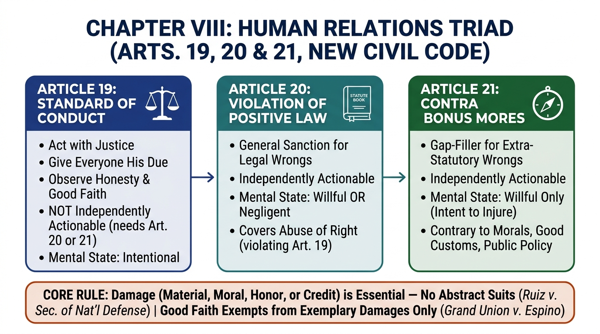
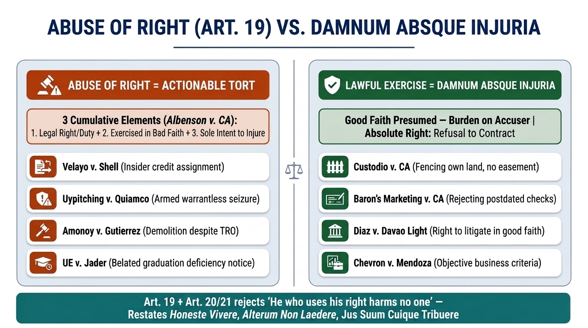
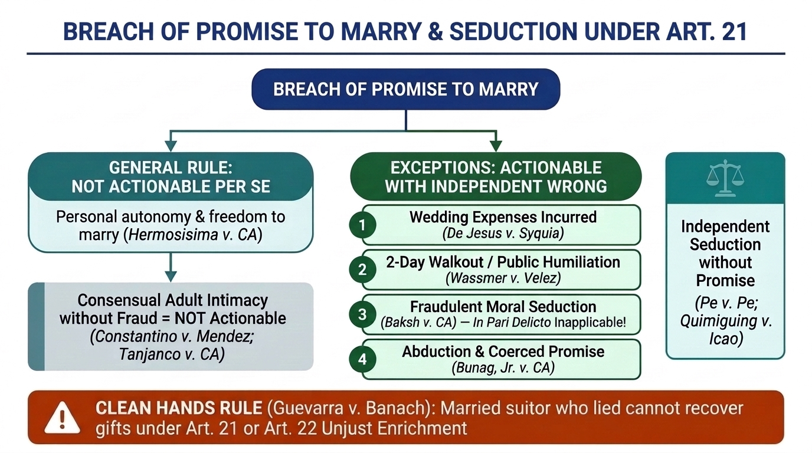
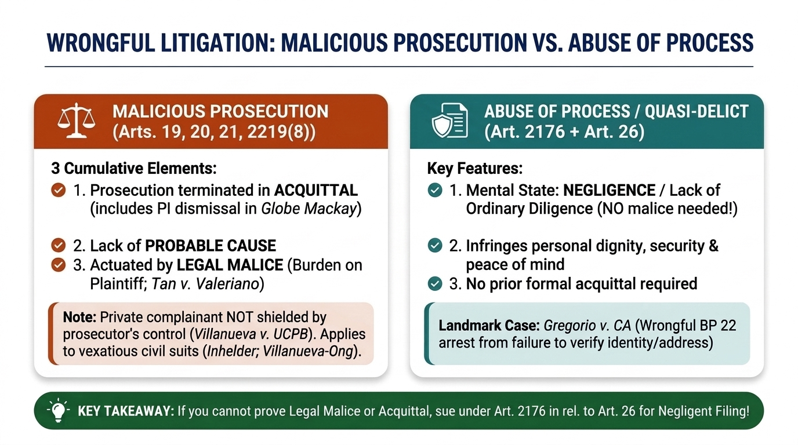
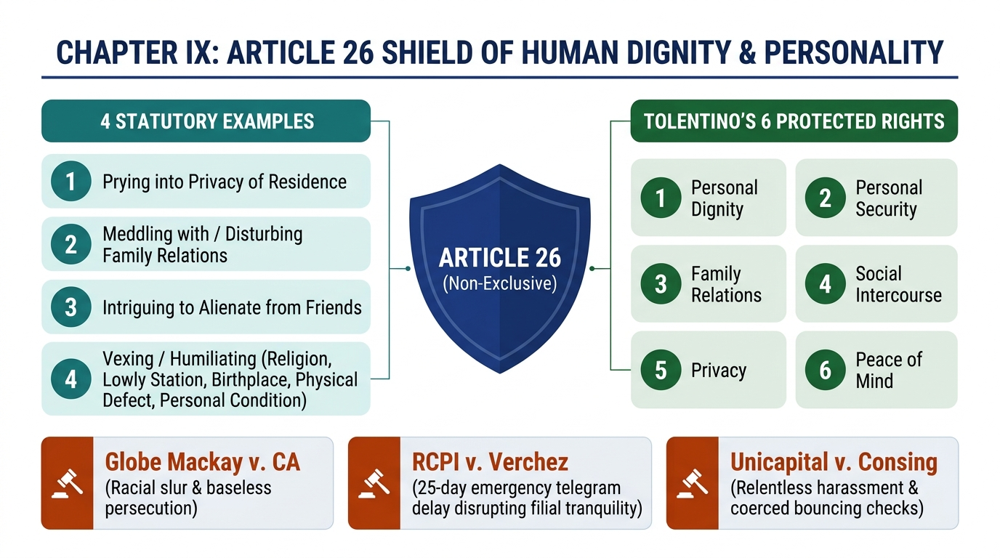
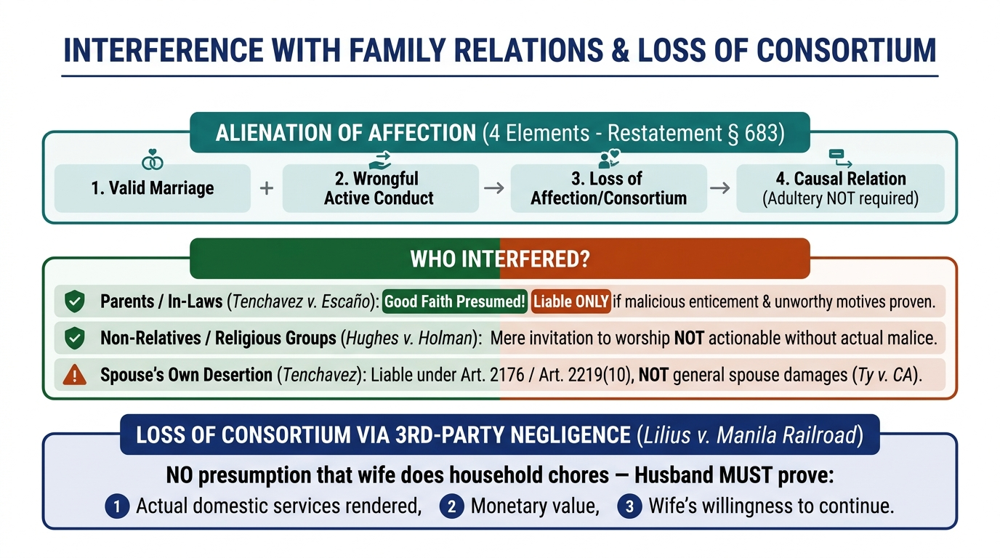
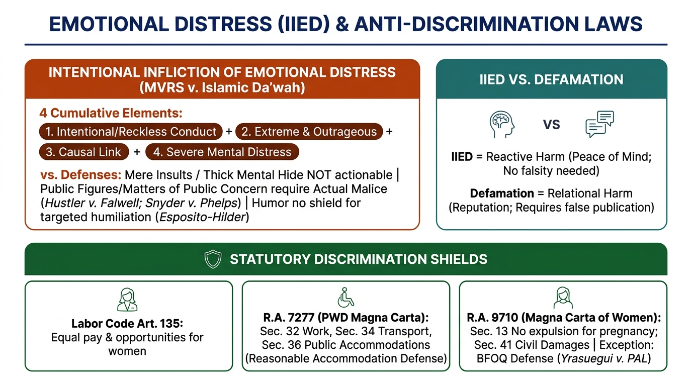

Textbook-Flow Study Edition • Arranged Strictly by Book Table of Contents • Hover or tap any underlined statutory citation for its verbatim text.
Why does the New Civil Code contain an entire chapter dedicated to “Human Relations”? Because positive statutes and penal laws can never anticipate every conceivable form of human misconduct. Left without a general moral and equitable safety net, clever wrongdoers could inflict severe harm while hiding behind technicalities—claiming either that no penal statute expressly forbade their act or that they were merely exercising a legal right.
To prevent that injustice, the framers of the Civil Code adopted principles akin to Article 826 of the German Civil Code (an analogous foreign provision imposing liability for acts causing damage in a manner contrary to good morals) and enacted Articles 19, 20, and 21 as the structural backbone of intentional civil liability in the Philippines.
At the heart of Chapter 2 on Human Relations are three interconnected “catch-all” articles—Article 19, Article 20, and Article 21—supported by Article 26 (dignity and peace of mind) and Article 27 (liability of public officers who refuse or neglect to perform official duties without just cause, requiring official duty to be executed with justice and good faith). Think of Articles 19, 20, and 21 as a three-part engine rather than three identical rules:

Under Article 19, “every person must, in the exercise of his rights and in the performance of his duties, act with justice, give everyone his due, and observe honesty and good faith.” Crucially, Article 19 does not provide an independent cause of action or remedy on its own; it operates as a declaration of fundamental legal principles setting the standard or degree of care required in human relations. To obtain damages for a breach of Article 19, a plaintiff must pair it with Article 20 or Article 21. Notice also the required state of mind across the three provisions: under Article 19, the act must be intentional; under Article 20, it may be either willful (intentional) or negligent (consciously done without intending the harmful result); and under Article 21, it must be willful (intent to perform the act coupled with a desire to achieve the outcome).
a. Violation of Law under Article 20: Article 20 mandates that “every person who, contrary to law, wilfully or negligently causes damage to another, shall indemnify the latter for the same.” It serves as a general sanction that pervades the entire legal system, providing civil relief whenever damage is caused by a violation of positive law—even when the violated statute itself carries no civil indemnity clause. When someone exercises a right without justice, without giving another his due, or without honesty and good faith, that right becomes an illegal act and a legal wrong because it violates Article 19; thus, Article 20 supplies the statutory hook for damages.
b. No Wrong without a Remedy: Article 21 prescribes that “any person who wilfully causes loss or injury to another in a manner that is contrary to morals, good customs or public policy shall compensate the latter for damages.” This embodies the Principle of No Wrong Without a Remedy: it cures the impossibility of human foresight anticipating every form of misconduct by transmuting moral norms into positive legal rules, ensuring an actor cannot cause damage with impunity merely because no specific penal or civil statute explicitly forbids their conduct.
c. Damage Essential Element of Cause of Action: Even if a defendant violates positive law or acts contrary to morals, a civil suit under Human Relations will not prosper in the abstract. There are two cumulative requisites for a cause of action: (1) the commission of an act (or omission) breaching positive law (Art. 20) or contrary to morals, good customs, or public policy (Art. 21), evaluated against the standard of care in Art. 19; and (2) sustained damage or legal injury—whether material, physical, moral, or injury to honor or credit. Note the evidentiary rule on burden of proof: while actual or physical damage does not need to be proven to recover moral damages under Chapter 2 (Arts. 19–36)—proof of moral injury, mental anguish, or wounded feelings suffices—the failure to plead or prove any damage at all results in dismissal.
Facts & Issue: Plaintiffs filed an action anchored on Article 21 asking the court for judicial recognition that they were co-architects of a hospital building, without alleging any pecuniary, moral, honor, or credit injury.
Ruling: The Supreme Court dismissed the complaint. Because plaintiffs alleged no material, moral, honor, or credit damage, no cause of action existed. Courts will not entertain an Article 21 suit solely seeking abstract judicial recognition.
d. Good Faith Not Necessarily an Excuse: A defendant cannot escape liability under Articles 19 and 21 simply by claiming “I meant well” or “I held no personal grudge.” Under the doctrine on good faith, if an actor adopts wrongful, disproportionate means substantially certain to inflict public humiliation or unfairness, an intentional tort is committed regardless of whether the ultimate motive was legitimate. At the same time, good faith can still play a mitigating role: acting in good faith or in the lawful defense of property under Article 429 exempts a defendant from exemplary damages, and under Article 2214, a plaintiff’s own contributory negligence reduces (mitigates) recoverable damages without defeating the suit.
Facts & Issue: A public official withheld the clearance of a retiring employee whose position had been abolished, defending his action by claiming he harbored no personal ill-will or grudge against the retiree.
Ruling: The Supreme Court held the official liable for bad faith. Personal ill-will or spite is not required where the facts objectively demonstrate undue discrimination and unfairness in the performance of official duties (echoing Article 27).
Facts & Issue: A customer innocently forgot to pay for a minor item (a \$1.50 cylindrical file). Supermarket security personnel accosted, detained, interrogated, shouted at, and threatened him in public. Could the supermarket escape liability because it acted in good faith to protect its store property?
Ruling: No as to moral damages, yes as to exemplary damages. The Supreme Court awarded moral damages under Articles 19 and 21 in relation to Article 2219, holding that publicly humiliating a person violates human dignity regardless of the store’s underlying motive. However, because the supermarket acted in good faith to protect its property under Article 429, exemplary damages were denied; moreover, the customer’s own forgetfulness constituted contributory negligence under Article 2214, reducing the recoverable award.
| Legal Parameter | Article 19 | Article 20 | Article 21 |
|---|---|---|---|
| Legal Nature | Declaration of principle / Standard of conduct. | General sanction for violations of positive law. | Remedial sanction for moral / extra-statutory wrongs. |
| Independent Actionability | Not independently actionable; must be coupled with Art. 20 or 21. | Independently actionable. | Independently actionable. |
| Requisite Mental State | Intentional. | Willful OR Negligent. | Willful only. |
| Target Conduct | Unjust, dishonest, or bad-faith exercise of rights/duties. | Acts contrary to existing positive law. | Acts contrary to morals, good customs, or public policy. |
| Mnemonic / Trigger | Tag | Decoded Meaning |
|---|---|---|
| J-D-H-G (Art. 19 Standards) | Study Aid | Act with Justice, give everyone his Due, observe Honesty and Good faith. |
| I • W/N • W (Mental States) | Study Aid | Art. 19 = Intentional; Art. 20 = Willful or Negligent; Art. 21 = Willful only. |
| 19 needs 20 or 21 | Study Aid | Art. 19 is a principle, not a standalone cause of action; pair it with Art. 20 (law) or Art. 21 (morals) + Damage. |
Because courts must not lightly punish people for exercising their legal rights, Philippine jurisprudence under Albenson Enterprises v. Court of Appeals requires the plaintiff to prove three cumulative elements:
By comparison, the Supreme Court of Spain frames the cumulative elements slightly more broadly: (1) the exercise of a right which is objective and apparently legal; (2) damage or injury to an interest not specifically protected by a legal precept; and (3) the immorality or antisocial character of the damage or injury caused, either with intent to injure or without a serious or legitimate purpose.
Historically, old Roman and civil-law individualism was summed up by the maxim qui iure suo utitur neminem laedit (“he who exercises his own right harms nobody”). Philippine law expressly departs from and rejects that rigid maxim. Instead, Article 19 restates the three classical Roman precepts of Ulpian: honeste vivere (to live honestly), alterum non laedere (not to injure another), and jus suum cuique tribuere (to render to everyone his due).
Under the Principle of Abuse of Right, one who acts under the guise of an apparently valid legal right but oversteps the bounds of equity and good faith, causing damage to another, incurs liability. The right itself may be legal, but the manner of its exercise becomes an illegality—and the statutory sanction is supplied by Article 20, because every abuse of right is contrary to law, the law violated being Article 19.
The flip side of this coin is the doctrine of Damnum Absque Injuria (damage without legal injury). When a party exercises a legitimate right within its lawful bounds, in good faith, and without malice or bad faith, any resulting financial inconvenience or loss to another cannot support an award of damages. Crucially, good faith is universally presumed in the exercise of rights; the burden of proving bad faith rests strictly upon the party alleging it, and speculation or conjecture can never establish an abuse of right.

Notice a unifying thread across all these rulings: in every single case below, the defendant started with a real right (collecting a debt, approving a lease, firing an agent, enforcing a writ, cutting off utilities, setting academic rules), but exercised it deceitfully, oppressively, or in defiance of fair dealing.
Facts & Ruling: Knowing from insider discussions that a debtor airline was insolvent and about to enter insolvency proceedings, Shell assigned its credit to an American sister company, which immediately attached the debtor’s airplane in the United States. By grabbing an unfair head start, Shell deprived co-creditors of their lawful pro-rata share and was held liable for abuse of right.
Facts & Ruling: PNB twice unreasonably disapproved a debtor’s proposed lease of a mortgaged sugar quota simply to force a higher price, fully aware that the agricultural year was expiring and delay would render the quota useless. Liable for abuse of right.
Facts & Ruling: Instead of filing a civil action for judicial or extrajudicial foreclosure, a mortgagee descended upon the debtor’s establishment with armed policemen and seized a mortgaged motorcycle without any search warrant or court order. Taking the law into one’s own hands is a classic abuse of right.
In UE v. Jader, a law school allowed a student to be listed as a tentative candidate for graduation, attend ceremonies, celebrate, and enroll in pre-bar review before belatedly telling him he had a failing deficiency. The university was held liable for actual damages for failing to inform him on time—but moral damages were eliminated because a senior law student is expected to verify his own academic records before preparing for the bar, thus sharing in his humiliation. In SLU v. Olairez, a university weaponized academic freedom by suddenly imposing a harsher revised comprehensive exam with severe failure penalties midway through the final school year.
By contrast, when an actor merely exercises an absolute right, enforces clear contractual or corporate bylaws, protects ownership within legal boundaries, or invokes the courts in good faith, any resulting hurt or loss is damnum absque injuria:
| Concept | Legitimate Exercise of Right | Abuse of Right (Article 19) |
|---|---|---|
| Legal Basis | Act is authorized by statute, contract, or ownership. | Act is apparently legal on its face but oversteps equity and good faith. |
| Presence of Bad Faith | Absent; motivated by legitimate business, legal, or personal interests. | Present; animated by bad faith, malice, or sole intent to prejudice. |
| Legal Consequence | Damnum absque injuria (no liability for damages). | Actionable tort under Article 20 or 21 (liable for damages). |
| Mnemonic / Trigger | Tag | Decoded Meaning |
|---|---|---|
| L-B-S (Albenson Elements) | Study Aid | Legal right/duty + exercised in Bad faith + Sole intent to injure. |
| H-A-J (Roman Maxims) | Study Aid | Honeste vivere (live honestly), Alterum non laedere (harm no one), Jus suum cuique tribuere (give everyone his due). |
| D-A-I (Damnum Absque Injuria) | Study Aid | Damage without legal injury = lawful right + good faith + no malice. |
a. Concept of Morals, Good Customs, Public Order and Public Policy: Just as Article 1306 sets morals, good customs, public order, and public policy as the outer boundaries of freedom to contract (echoing Article 1255 of the Spanish Civil Code of 1889 defining orden público), Article 21 makes acts transgressing those same norms actionable in tort. Because these terms are indeterminate in nature and deliberately left undefined by the Civil Code, they elude rigid formulas and require courts to weigh them against the facts of each case. Under Albenson Enterprises v. Court of Appeals, an action for acts contra bonos mores under Article 21 requires three cumulative elements: (1) there is an act which is legal; (2) the act is contrary to morals, good customs, public order, and public policy; and (3) the act is done with intent to injure. Thus, an act contrary to morals is not actionable under Article 21 unless the claimant proves by preponderant evidence that it was done intentionally with the specific desire to cause harm, loss, or humiliation (as seen in Yalung, Sr. v. Magsaysay Films, where defendants botched post-production, misled clients, and offered an unregistered shell company in settlement).
b. Broad Coverage: Article 21 gives practical teeth to Article 19 by making every imaginable moral wrong that causes material or moral injury compensable. Unlike Article 19, Article 21 is a direct, independent statutory basis for damages (supported by Articles 2217, 2219(10), 2229, and 2234 on moral and exemplary damages).
c. Rationale: Because human foresight cannot specifically enumerate every form of wrongful conduct in positive statutes, Article 21 infuses legal vitality from morality so no wrongdoer can hide behind the absence of a criminal prohibition.
| Legal Parameter | Abuse of Right (Article 19) | Acts Contra Bonus Mores (Article 21) |
|---|---|---|
| Statutory Classification | Principle of law defining the standard of conduct. | Independent, actionable civil tort provision. |
| Object of Violation | Violation of duty to act with justice, give due, and observe honesty. | Transgression of morals, good customs, public order, or public policy. |
| Sanction Mechanism | Requires Article 20 or Article 21 to obtain an award for damages. | Direct statutory basis for the award of damages. |
| Intent Requirement | Intentional exercise of right in bad faith. | Legal act done willfully with intent to injure. |
Start with the General Rule: A mere breach of promise to marry per se is NOT an actionable wrong under Philippine law (Hermosisima v. Court of Appeals; Estopa v. Piansay; Baksh v. Court of Appeals). When the New Civil Code omitted the Spanish Civil Code of 1889 provisions allowing suits for breach of marriage promise, it intentionally closed the courts to “heartbalm” lawsuits, leaving only the right to recover money or property advanced on the faith of the promise. The constitutional and policy rationale is straightforward: marriage is an intimate personal decision tied to human dignity, autonomy, and liberty, so courts must never pressure someone to marry under threat of civil liability or encourage litigation over a broken heart.
Equally, mere consensual sexual intercourse between two adults of mature age—driven by voluntariness, mutual passion, and desire rather than fraud or moral seduction—is not actionable (Constantino v. Mendez; Tanjanco v. Court of Appeals).
Exceptions — When Breach of Promise to Marry Becomes Actionable: While breaking off an engagement is not actionable by itself, it becomes actionable when accompanied by an independent wrongful act under Articles 19, 20, 21, or 2176:

a. Pari Delicto Rule When Inapplicable: Defendants in moral seduction suits often argue that the woman is in pari delicto (equally at fault) for consenting to premarital sex. In Gashem Shookat Baksh v. Court of Appeals, the Supreme Court firmly rejected this defense: the in pari delicto rule does NOT apply to a victim of moral seduction. A woman who yields her virtue because of fraudulent protestations of love and marriage is a victim of deception, not equally culpable, and equity intervenes for the less guilty party. Conversely, a plaintiff suing under Human Relations must come with clean hands: in Jhonna Guevarra et al. v. Jan Banach, a foreign national who concealed his subsisting marriage, lied about his identity, and wooed a woman under false pretenses could not recover financial gifts or claim damages under Article 21 or Article 22 (Unjust Enrichment) after the engagement failed.
Even where there is no breach of promise to marry at all, seduction accomplished through deceit, enticement, superior power, or abuse of confidence is independently actionable under Article 21 (and entitles recovery of moral damages under Article 2219(3)), regardless of whether the parties are of the same gender and even if criminal liability for qualified or simple seduction (RPC Arts. 337–338) does not attach:
In Pe v. Pe, a married man used the pretext of learning how to pray the rosary to gain free access to a relative’s home, clandestinely courting and winning the affection of a 24-year-old woman until she left her parental home. Even without a broken promise of marriage, his calculated abuse of trust was an actionable moral wrong under Article 21 against both the young woman and her family. Similarly, in Quimiguing v. Icao, a married man who forced a woman not his wife to yield to his lust was held civilly liable under Article 21.
| Ground | Actionable Seduction (Art. 21) | Non-Actionable Intercourse |
|---|---|---|
| Primary Inducement | Deceit, subtle trickery, enticement, or abuse of confidence. | Voluntariness, mutual passion, and mutual desire. |
| Intent of Actor | Insincere promise to marry or scheming pretext to obtain lustful congress. | Sincere relations or voluntary intimacy between consenting adults. |
| Jurisprudential Exemplars | Gashem Shookat Baksh v. CA; Cecilio Pe v. Alfonso Pe. | Constantino v. Mendez; Tanjanco v. CA. |
Can one spouse sue the other for damages simply for violating marital obligations? As a General Rule, civil actions for damages between spouses for breach of a marital obligation are NOT permissible (Ty v. Court of Appeals). Why? Because allowing spouses to collect money damages from conjugal funds creates a legal absurdity; the proper legal remedies are legal separation or criminal prosecution for adultery or concubinage.
However, there is a notable Exception: in Pastor B. Tenchavez v. Vicenta F. Escaño, where a wife willfully deserted her husband, denied him consortium, refused to perform wifely duties, and secured an invalid foreign (Nevada) divorce, the Supreme Court held that her conduct constituted a willful infliction of injury upon feelings contrary to morals and good customs, warranting moral damages under Article 2219(10) (alongside Article 2176).
5.01. Trespass to and/or Deprivation of Real Property: Unlawful invasion of real property triggers civil liability depending strictly on the actor’s good or bad faith. A possessor or builder in bad faith—someone who builds, plants, or sows on another’s land knowing there is a defect in their title—is liable for damages under Article 451. Conversely, under Article 448 in relation to Article 456, a builder, planter, or sower in good faith is NOT liable for damages, because the law limits the landowner strictly to statutory accession options (appropriating the work upon indemnity or compelling purchase of the land) and does not penalize good faith (Republic v. Hon. Jaime de los Angeles, citing Concepcion, C.J., dissenting). A builder in good faith becomes liable for damages only if they acted negligently under Article 2176.
| Classification | Builder in Good Faith (Art. 448) | Builder in Bad Faith (Art. 451) |
|---|---|---|
| Awareness of Title | Believes honestly without notice that they have the right to build. | Builds knowing there is a defect in title or without any right. |
| Liability for Damages | Not liable for damages (subject only to accession options). | Liable for damages under Article 451. |
| Exception to Rule | Liable only if negligent under Article 2176. | General rule of liability applies strictly. |
5.02. Trespass to Personal Property: Even where no crime (such as theft or robbery) is committed, unlawfully depriving someone of movable property or essential utility services is an actionable tort under Article 21:
Apart from criminal liability for abortion under Articles 257, 258, and 259 of the Revised Penal Code (covering unintentional abortion, abortion caused by the pregnant woman or parents, and abortion practiced by a physician or midwife exploiting scientific skill), a physician who causes an abortion through negligence or intentional acts without spousal consent incurs civil liability for damages. In Geluz v. Court of Appeals, the Supreme Court clarified that a husband may recover moral damages for his distress over the loss of an unborn child and disappointed parental expectations, provided he proves a factual basis of actual distress and mental anguish. Recovery was denied in Geluz because the wife voluntarily procured the abortion without her husband’s knowledge (in fact, her third abortion) and the husband failed to substantiate genuine mental distress.
Under Article 1701, neither capital nor labor may act oppressively against the other. Thus, while an employer holds the management prerogative to discipline or dismiss employees for misconduct, executing a dismissal in an oppressive, anti-social, humiliating, or abusive manner violates Article 1701 and Article 21 (Quisaba v. Sta. Ines-Melale Veneer and Plywood, Inc.; Philippine Refining Co. v. Garcia; Globe Mackay Cable & Radio Corp. v. Court of Appeals). Likewise, dismissing workers based on fabricated grounds or imaginary business losses constitutes an actionable abuse of right (AHSI 1 Phil. Employee’s Union v. NLRC).
8.01. Definition and Statutory Bases: Malicious prosecution is the institution of a criminal prosecution, civil suit, or other legal proceeding maliciously and without probable cause, terminating in favor of the defendant, for the mere purpose of vexation or injury (Drilon v. Court of Appeals, citing Cabasaan v. Anota). Its statutory anchors include Articles 19, 20, and 21, Article 26, Articles 32, 33, and 35, and Article 2219(8) (explicitly authorizing moral damages in cases of malicious prosecution). Remember the baseline rule: an acquittal or adverse judgment does not automatically make a lawsuit wrongful, because the law refuses to penalize the good-faith exercise of the right to litigate (damnum absque injuria).
8.02. Elements of Cause of Action: To recover for malicious prosecution, the plaintiff must satisfy three cumulative elements: (1) the fact of the prosecution and that the defendant was himself the prosecutor, and that the action finally terminated with an acquittal; (2) in bringing the action, the prosecutor acted without probable cause; and (3) the prosecutor was actuated or impelled by legal malice. Good faith is presumed, so the burden of proving both malice and lack of probable cause rests squarely on the plaintiff (Tan v. Valeriano).
8.03. Other Bases of Liability for Abuse of Process: What if a victim of an improper arrest or baseless suit cannot prove legal malice or lacks a formal criminal acquittal? They are not trapped! Under Gregorio v. Court of Appeals, an injured party may sue under Article 2176 in relation to Article 26 (and Article 2180 for employer vicarious liability) if the complainant failed to exercise ordinary diligence in verifying the accused’s identity and address, causing wrongful arrest and indictment under B.P. Blg. 22.

| Legal Parameter | Malicious Prosecution | Abuse of Process (Art. 2176 in rel. to Art. 26) |
|---|---|---|
| Statutory Basis | Articles 19, 20, 21, and 2219(8). | Article 2176 in relation to Article 26. |
| Gist of Action | Initiating legal process with legal malice and without probable cause. | Infringing personal security, dignity, and peace of mind through lack of ordinary diligence. |
| Mental Element | Malice / Bad Faith (deliberately false and groundless prosecution). | Negligence / Fault (lack of diligence in verifying identity/address). |
| Termination Requirement | Requires prior final termination / acquittal. | Actionable based on tortious service/arrest without needing formal criminal acquittal. |
Positive acts directed against a person that cause public embarrassment, indignity, or personal affront are compensable under Article 21 (and may also constitute criminal slander by deed under Article 359 of the Revised Penal Code):
| Mnemonic / Trigger | Tag | Decoded Meaning |
|---|---|---|
| D-W-B-B (Actionable Broken Promises) | Study Aid | De Jesus (expenses), Wassmer (2-day walkout), Baksh (fraudulent seduction), Bunag (abduction). |
| P-N-M (Malicious Prosecution) | Study Aid | Prosecution ending in acquittal + No probable cause + Legal Malice. |
| 448 = Free | 451 = Fee | Study Aid | Builder in good faith (Art. 448) pays no damages (unless negligent); bad faith (Art. 451) pays damages. |
Article 26 of the New Civil Code commands that “every person shall respect the dignity, personality, privacy and peace of mind of his neighbors and other persons.” It explicitly provides that the following and other similar acts—though they may not constitute a criminal offense—produce a cause of action for damages, prevention, and other relief:
As formulated by Senator Arturo Tolentino, Article 26 protects six principal rights: (1) right to personal dignity; (2) right to personal security; (3) right to family relations; (4) right to social intercourse; (5) right to privacy; and (6) right to peace of mind. Violations entitle the aggrieved party to moral damages under Article 2217 and Article 2219 (Concepcion v. Court of Appeals).
a. Rationale: The philosophical bedrock of Article 26 is the Doctrine of Sacredness of Human Personality—mirroring the Universal Declaration of Human Rights, which enshrines human dignity as an inherent right and the foundation of freedom, justice, and peace. The Code Commission recognized that existing penal laws against defamation and unjust vexation are inadequate to shield human personality: laws are defective if they fail to forestall human suffering or curb influences that wound the noblest sentiments. Hence, prying, meddling, religious obloquy, contempt toward the poor, and humiliation over physical defects or lowly stations are civilly actionable even when no penal statute is broken.
b. Not Exclusive: Notice the phrase “the following and other similar acts.” Under the Non-Exclusivity Rule of Article 26, the four numbered examples are purely illustrative and never limit the courts. Analogous dignitary wrongs—such as profane, insulting, humiliating, scandalous, or abusive language, baseless persecution and racial slurs (Globe Mackay Cable & Radio Corp. v. CA), negligent arrests from unverified B.P. Blg. 22 complaints (Gregorio v. CA, using Art. 2176 + Art. 26 + Art. 2180), 25-day negligent delays of emergency telegrams disrupting family peace (RCPI v. Verchez), or relentless creditor harassment coercing postdated bouncing checks and spreading libelous rumors (Unicapital, Inc. v. Consing, Jr.)—all fall squarely within Article 26’s protective umbrella.

| Mnemonic / Trigger | Tag | Decoded Meaning |
|---|---|---|
| P-M-I-V (4 Acts in Art. 26) | Study Aid | Prying into residence; Meddling in family/private life; Intriguing to alienate friends; Vexing/humiliating on personal condition. |
| D-S-F-S-P-P (Tolentino’s 6 Rights) | Study Aid | Personal Dignity, Personal Security, Family Relations, Social Intercourse, Privacy, Peace of Mind. |
Under Article 26, both “meddling with or disturbing the private life or family relations of another” (par. 2) and “intriguing to cause another to be alienated from his friends” (par. 3) are actionable civil torts. The law protects relational peace not only between spouses, but also among parents, children, and social circles against malicious wedge-driving.
a. History: Historically, the obligation of spouses to live together, protect, assist, and support each other was fixed by Articles 44–48 of the Civil Marriage Law of 1870 and is now codified in Article 68 of the Family Code (mutual love, respect, fidelity, help, and support). From common-law tort tradition, Philippine jurisprudence recognizes the tort of Alienation of Affection of a Spouse: depriving one spouse of the affection, society, companionship, and comfort (consortium) of the other. Crucially, adultery, criminal unfaithfulness, or loss of household services is NOT required—the gist of the tort is an intentional wrongful interference with a spouse’s mental attitude and marital kindness.
b. Requirements: Under the Restatement (Second) of Torts § 683, alienation of affection requires four cumulative elements: (1) a valid marriage; (2) wrongful conduct by the defendant with the plaintiff’s spouse; (3) the loss of affection or consortium (society, companionship, and comfort); and (4) a causal relation between the defendant’s conduct and the deprivation of affection. (Note: A minority view further requires proving the spouses were happily married and genuine love previously existed.) For culpability to attach, there must be active participation, initiative, or encouragement by the defendant—mere passivity or passively becoming the object of another’s affection is insufficient—and the defendant’s wrongful acts must be the efficient cause of the alienation.
c. Alienation of Affection by In-laws: Does a parent become liable simply for advising a married child to leave an unhappy marriage? No. Because the law respects natural kinship, parents and in-laws enjoy a qualified parental privilege, and good faith and commendable motives are legally presumed. A parent may receive a child into their home, provide shelter, sustenance, and good-faith advice for the child’s welfare without liability even if separation or divorce results. To overcome this privilege, the plaintiff must prove three cumulative requisites: (1) the parent acted maliciously and without justification (actual legal malice); (2) acted from unworthy motives rather than concern for the child’s welfare; and (3) wrongfully enticed the child to leave or stay away from the spouse.
Facts & Issue: Vicenta Escaño obtained an invalid Nevada divorce and refused to live with her husband Pastor Tenchavez. Pastor sued Vicenta for desertion and also sued Vicenta’s parents for alienation of affection and alleged social/racial discrimination.
Ruling (Three Key Holdings): (1) Liability of Spouse: Vicenta’s valid Philippine marriage still subsisted; her desertion, denial of consortium, and refusal of wifely duties were actionable under Article 2176 (and Art. 2219(10)), entitling Pastor to indemnity. (2) Non-Liability of Parents: The charges against Vicenta’s parents were dismissed because parents are presumed to act in good faith for their daughter’s welfare and no malicious enticement was shown. (3) Counterclaim Against Husband: Tenchavez himself was ordered to pay moral damages to the parents for recklessly filing groundless discrimination and alienation claims against them.
d. Alienation of Affection by Non-relatives & e. Exercise of Rights: Non-relatives and strangers enjoy no parental privilege, yet liability still requires an intentional design to alienate affection. Where a third party or religious group simply exercises a lawful or religious right—such as inviting a married woman to attend religious services over her husband’s objection (W.L. Hughes v. Frank Holman)—no tort of alienation of affection is committed absent substantial proof of actual malice in law and a calculated intent to cause marital estrangement.
| Legal Parameter | Parents / In-Laws | Strangers / Non-Relatives |
|---|---|---|
| Legal Presumption | Good faith and commendable motives presumed. | No presumption of parental privilege exists. |
| Standard of Interference | Allowed to advise and shelter child in good faith even if separation results. | Liable if meddling poisons family relations without lawful right. |
| Requisite of Malice | Mandatory: Must prove clear want of justification & malicious enticement. | Mandatory: Must establish intentional design to alienate affection. |
f. Negligence: Distinguish intentional alienation of affection (which requires active, malicious design) from negligent disruption of family peace under Article 2176 in relation to Article 26—where carelessness by a third party fractures family harmony or causes loss of consortium, discussed right below.
Even without trying to break up a marriage, a third party’s negligent breach of duty can disturb “filial tranquility” and peace of mind under Article 26, giving rise to moral damages under Article 2219.
Facts & Ruling: RCPI negligently delayed transmitting an emergency telegram requesting hospital funds by 25 days. Because the relatives received no word, family members blamed each other for failing to help during the crisis. The Supreme Court held RCPI liable under Article 26 (as a quasi-delict analogous thereto) for disrupting the family’s “filial tranquility” and peace of mind.
When a third party’s negligence physically injures a spouse, can the uninjured husband automatically claim damages for losing his wife’s household services and consortium? No. Under Lilius v. Manila Railroad Co., modern marriage creates no legal presumption that a wife performs all domestic chores. To recover, the husband bears the strict burden of affirmatively proving three cumulative requisites: (1) the actual existence and nature of domestic services rendered by the wife prior to the accident; (2) the monetary value of those services; and (3) the wife’s willingness to continue rendering them had she not been disabled. In Lilius, although the railroad was negligent at an un-gated crossing, the husband’s consortium claim was denied because he offered no proof of those three items.

| Mnemonic / Trigger | Tag | Decoded Meaning |
|---|---|---|
| M-W-L-C (Alienation Elements) | Study Aid | Valid Marriage + Wrongful active conduct + Loss of consortium + Causal relation (adultery not needed). |
| M-U-E (Overcoming In-Law Privilege) | Study Aid | Malicious/unjustified + Unworthy motives + Wrongful Enticement. |
| E-V-W (Lilius Consortium Proofs) | Study Aid | Actual Existence of services + Monetary Value + Wife’s Willingness to continue. |
Article 26, paragraph 4 expressly creates a civil action for damages, prevention, and other relief against any person who “vexes or humiliates another on account of his religious beliefs, lowly station in life, place of birth, physical defect, or other personal condition.” Notice how three landmark cases illustrate this shield in action:
Philippine jurisprudence formally recognized the tort of Intentional Infliction of Emotional Distress (IIED)—derived from the Restatement (Second) of Torts—in MVRS Publications, Inc. v. Islamic Da’wah Council of the Philippines, Inc. Although the Supreme Court declined to award libel damages for an alleged insult against Muslims as a broad religious class, it adopted the four cumulative elements of IIED: (1) defendant’s conduct was intentional or in reckless disregard of the plaintiff; (2) conduct was extreme and outrageous; (3) a causal connection existed between the conduct and the distress; and (4) plaintiff’s mental distress was extreme and severe.
a. Extreme and Outrageous Conduct: To cross the IIED threshold, the conduct must be so outrageous in character and extreme in degree as to go beyond all possible bounds of decency, and be regarded as atrocious and utterly intolerable in a civilized society. Humor is no shield for targeted cruelty: in Esposito-Hilder v. SFX Broadcasting, Inc., a radio morning show held an “Ugliest Bride” contest, singled out the newlywed plaintiff, mocked her bridal photo, and broadcast her name, employer, and remarks about her superiors. The court held that comedic expression enjoys no absolute First Amendment protection when disguised as a deliberate attempt to inflict severe emotional injury.
b. Emotional Distress: The distress suffered must be so severe that no reasonable person could be expected to endure it. Consequently, tort law does NOT punish mere insults, indignities, annoyances, petty expressions, or inconsiderate conduct lacking aggravating circumstances. Society presumes a “thickening of the mental hide” against everyday rough language and unkindness.
c. Distinguished from Defamation: As explained in MVRS Publications, IIED and Defamation protect two fundamentally different interests:
| Legal Parameter | Defamation (Libel / Slander) | Intentional Infliction of Emotional Distress (IIED) |
|---|---|---|
| Protected Interest | Relational harm principle (reputation and standing in the community). | Reactive harm principle (individual peace of mind and emotional tranquility). |
| Falsity Requirement | Requires a defamatory, false imputation of fact. | False statement of fact is NOT required; liability rests on outrageous conduct. |
| Core Gist | Publication of defamatory matter to third persons. | Direct unconscionable conduct directed at the plaintiff. |
d. Moral Damages Distinguished from Emotional Distress: Even when a plaintiff cannot satisfy the strict common-law IIED threshold (for instance, where conduct is unfair or humiliating without reaching “atrocious” common-law extremes), Philippine plaintiffs can recover moral damages under Article 2217 and Article 2219(10) for mental anguish, wounded feelings, and social humiliation by anchoring their claim on Articles 19, 20, 21, or Article 26.
e. Matters of Public Concern: When IIED collides with constitutional free speech, free speech prevails for public figures and public issues. In Hustler Magazine v. Falwell, an outrageous parody depicting a famous evangelist in an inebriated incestuous encounter was held non-actionable because public figures cannot recover for IIED without proving a false statement of fact made with actual malice (knowing falsehood or reckless disregard of truth). Likewise, in Snyder v. Phelps, picketing with deeply offensive signs at a public venue regarding matters of public concern (military funerals) was shielded by the First Amendment against IIED liability.

3.01. Discrimination under the Labor Code: Article 135 of the Labor Code declares it unlawful for any employer to discriminate against a female employee regarding terms and conditions of employment solely on account of sex—such as paying lesser compensation for work of equal value, or favoring male employees over females in promotions, training opportunities, and study/scholarship grants. It explicitly empowers an aggrieved employee to file a separate and distinct civil money claim independent of any criminal action. However, physical or biological qualifications are lawful under the Bona Fide Occupational Qualification (BFOQ) Defense if job-related and dictated by business necessity or public safety: in Yrasuegui v. Philippine Airlines, Inc., the dismissal of an international flight attendant for repeatedly failing company weight standards was upheld as an analogous cause under Article 282(e) [now Art. 297(e)] of the Labor Code because cabin-crew physical agility is essential to passenger safety.
3.02. Discrimination of Disabled: Under Republic Act No. 7277 (Magna Carta for Disabled Persons), discrimination against PWDs is prohibited across three key spheres: (1) Employment (Sec. 32)—no discrimination against qualified disabled persons in job applications, hiring, promotion, discharge, compensation, or employment terms; (2) Transportation (Sec. 34)—carriers cannot charge higher fares or refuse conveyance of disabled persons, their orthopedic devices, personal effects, or merchandise; and (3) Public Accommodations (Sec. 36 in relation to Sec. 35)—equal enjoyment of hotels, restaurants, theaters, convention centers, banks, schools, gyms, and similar facilities. Defense: An employer is exempt from liability for dismissing a disabled worker whose disability impairs satisfactory performance to the prejudice of the business only if the employer first sought to provide reasonable accommodations.
3.03. Discrimination under Magna Carta for Women (R.A. No. 9710):
| Mnemonic / Trigger | Tag | Decoded Meaning |
|---|---|---|
| I-E-C-S (IIED 4 Elements) | Study Aid | Intentional/Reckless + Extreme & Outrageous + Causal Link + Severe Mental Distress. |
| 32 • 34 • 36 (R.A. 7277 PWD) | Study Aid | Sec. 32 = Work/Employment; Sec. 34 = Transport; Sec. 36 (w/ 35) = Public Accommodations. |
| 4(b) • 13 • 16 • 41 (MCW) | Study Aid | 4(b) Definition; 13 No pregnancy expulsion; 16 Media; 41 Private civil damages. |
Philippine law combats sexual harassment through an overlapping suite of statutes rather than a single act. The foundational statute is Republic Act No. 7877 (Anti-Sexual Harassment Act of 1995): Section 2 declares unlawful all forms of sexual harassment in employment, education, or training environments; Section 3 punishes offenders wielding authority, influence, or moral ascendancy; Section 4 imposes affirmative prevention duties on employers and school heads; Section 5 creates solidary civil liability for inaction; Section 6 allows an independent civil action for damages; and Section 7 imposes penalties of 1 to 6 months imprisonment, a fine of ₱10,000.00 to ₱20,000.00, or both, with a 3-year prescriptive period.
| Statutory Feature | Anti-Sexual Harassment Act (R.A. No. 7877) | Safe Spaces Act (R.A. No. 11313) |
|---|---|---|
| Covered Spheres | Work, education, and training environments only. | Streets, public spaces, cyberspace (online), workplaces, and schools. |
| Offender Relationship | Requires authority, influence, or moral ascendancy. | Authority is NOT required; punishes acts between peers, co-workers, and subordinates. |
| Form of Solicitation | Requires demand, request, or requirement of sexual favor (overt or implied). | Encompasses gender-based slurs, catcalling, cyberstalking, and sexist remarks without solicitation. |
In Vedana v. Valencia, the Supreme Court underscored that sexual harassment is not merely an isolated personal indiscretion—it springs from an institutionalized legacy of discrimination and abuse of power. Because of this historical reality, the judiciary is bound to exhibit heightened sensitivity to gender issues and recognize that women must be afforded a work environment conducive to productivity and human dignity.
Under Section 3 of R.A. No. 7877, the primary offender must be an employer, employee, manager, supervisor, agent, teacher, instructor, professor, coach, trainer, or any other person having authority, influence, or moral ascendancy over the victim (as applied in Jacutin v. People, affirming the conviction of a City Health Officer who harassed a subordinate). Watch the critical boundary in Lamsis v. Sales: if moral ascendancy or authority is absent, the accused cannot be convicted under R.A. 7877—though they remain liable for disgraceful/immoral conduct or civil torts under Articles 21 and 26 (and today may fall under R.A. 11313).
Must the offender bluntly say “sleep with me or you’re fired”? No! Under the Unspoken and Non-Categorical Solicitation Rule in Domingo v. Rayala, it is not necessary that the demand, request, or requirement of a sexual favor be articulated in categorical oral or written statements. It may be discerned with equal certitude from the offender’s overt acts—such as holding and squeezing shoulders, running fingers across the neck, tickling ears, and giving money with promises of future privileges accompanied by sexual overtones. On the other hand, innocent social gestures are protected: a superior who innocently shakes hands with a subordinate does not commit sexual harassment (Biboso v. Judge Villanueva).
5.01. Quid Pro Quo Cases: Sexual favors are demanded or impliedly required in exchange for hiring, continued employment, promotions, benefits, passing grades, or scholarships. Because this trades economic or academic survival for sexual submission, a single act is sufficient.
5.02. Hostile Environment Cases: Even where no job benefit is explicitly traded, an employer or supervisor can make the workplace unbearable. In LBC Express-Vis, Inc. v. Palco, a supervisor subjected a female co-employee to sexually suggestive conduct (holding hands, placing hands on her lap, pulling bra straps, joking about making a baby, attempting to kiss her). The Supreme Court held that an employer’s failure to act on sexual harassment renders the workplace unsafe and hostile, amounting to constructive dismissal.
| Classification | Quid Pro Quo Harassment | Hostile Environment Harassment |
|---|---|---|
| Gist of Violation | Sexual favors demanded in exchange for employment benefits, grades, or promotions. | Pervasive, severe conduct creating an abusive, intimidating, or offensive atmosphere. |
| Frequency of Conduct | A single act is sufficient. | Generally requires repeated, pervasive incidents (though severe single acts may suffice). |
| Statutory Scope | Expressly covered under R.A. No. 7877. | Covered under R.A. 7877, R.A. 11313, CSC Rules, and Arts. 21/26. |
In the public sector, Civil Service Commission (CSC) Resolution No. 01-0940 imposes administrative disciplinary liability for sexual harassment, explicitly providing that solicitation of sexual favors or sexual advances is NOT required to create an actionable hostile work environment in government offices.
A victim of sexual harassment has multiple civil avenues for damages, depending on the relationship and statutory requirements:
| Mnemonic / Trigger | Tag | Decoded Meaning |
|---|---|---|
| 7877 = Up | 11313 = All | Study Aid | R.A. 7877 requires authority/ascendancy (top-down); R.A. 11313 covers peers, subordinates, streets & online too. |
| 1-6 / 10-20 / 3 (R.A. 7877 Sec. 7) | Study Aid | 1–6 mos. imprisonment; ₱10k–₱20k fine; 3-year prescription. |
| S-U-P (Hostile Environment) | Study Aid | Sexual conduct + Unwelcome + Severe/Pervasive (measured by Reasonable Woman, no nervous breakdown required). |